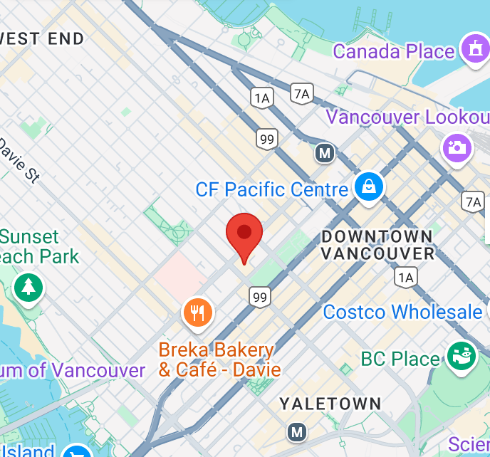

Concept
Our passion brought the first restaurant to downtown Vancouver in December 2009. Shizen Ya is proud to be the first natural food Japanese restaurant chain in North America which serves sushi with only brown rice, and salad with organic vegetables. We confidently serve you the best food with the best ingredients including homemade stock, genuine Japanese wasabi, and even seasonings. Please also do not hesitate to ask your server about our vegan and gluten-free selections.
Ocean Wise
Vancouverites’favourite: sockeye salmon and albacore tuna. We cut locally caught wild seafood (Ocean Wise TM certified) every morning, thus we can serve you the freshest seafood.
GlutenFree
We use blownRice for all of the menu. Shizen Ya is the first Japanese restaurant in North America which carry only brown rice. Our USDA certified organic brown rice is sprouted after being soaked in water overnight before it is cooked. We spend more time for our main ingredient. That’s why Shizen Ya’s brown rice has soft texture.
Vegan
We have a lot of menu for vegan. Fresh vegetables make our body healthier. USDA certified and locally grown fresh vegetables are brought to us every day, and they are served to you with the best cooking methods. We also use the whole food by making our vegetable stock even from pieces of vegetables left. We never waste the gift from the Mother Earth. This spirit is the source of our tastiness.
Access
965 Hornby St., Vancouver, B.C.
TEL:604-568-0013
Monday to Friday 11:30AM-10:00PM
Saturday 12:00PM-10:00PM
Sunday and Holidays 12:00AM-9:00PM